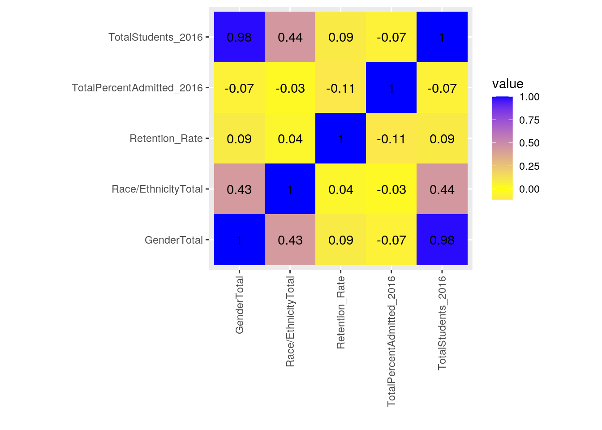
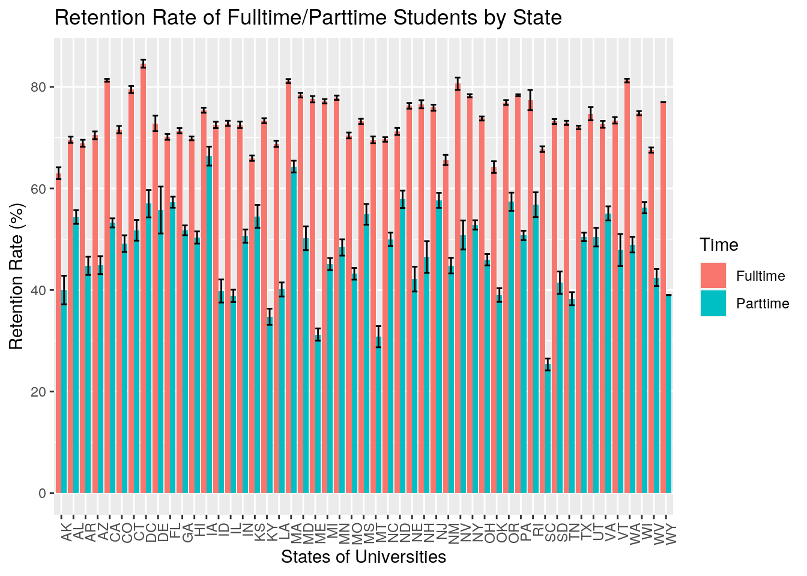
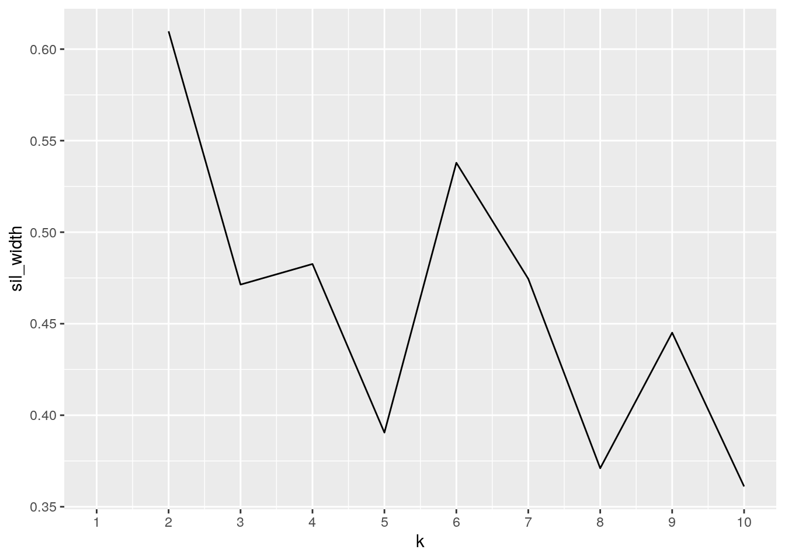
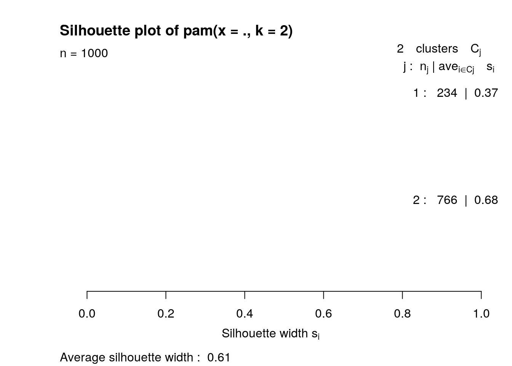
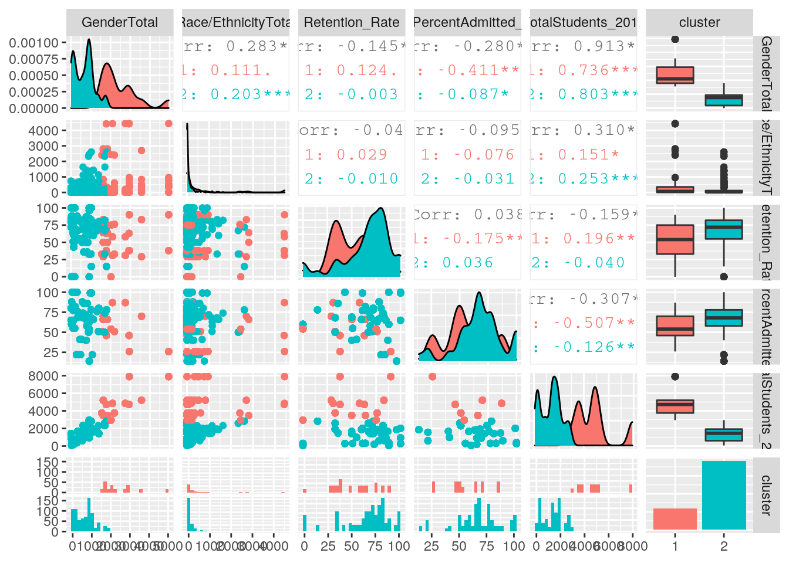

January 1, 0001
R Markdown
This is an R Markdown document. Markdown is a simple formatting syntax for authoring HTML, PDF, and MS Word documents. For more details on using R Markdown see http://rmarkdown.rstudio.com.
When you click the Knit button a document will be generated that includes both content as well as the output of any embedded R code chunks within the document. You can embed an R code chunk like this:
institutions = read.csv("institutions.csv")
retentionrates = read.csv("retention-rates.csv")The two data sets chosen are about institutions and their retention rates. I chose these data sets because my sister is a junior in high school and asks me all the time what the best schools to applyy to are and why. A good reason I can come up with is the ability for them to retain their students from 2008 to 2016. The institution data set also has a lot of information on institutions such as their college websites and their locations. They can be joined through instituion names.
library(tidyr)
library(dplyr)
retentionrates <- retentionrates %>% rename(Fulltime_2016 = Full.time.retention.rate..2016..EF2016D.,
Parttime_2016 = Part.time.retention.rate..2016..EF2016D.,
Fulltime_2015 = Full.time.retention.rate..2015..EF2015D.,
Parttime_2015 = Part.time.retention.rate..2015..EF2015D.,
Fulltime_2014 = Full.time.retention.rate..2014..EF2014D.,
Parttime_2014 = Part.time.retention.rate..2014..EF2014D.,
Fulltime_2013 = Full.time.retention.rate..2013..EF2013D.,
Parttime_2013 = Part.time.retention.rate..2013..EF2013D.,
Fulltime_2012 = Full.time.retention.rate..2012..EF2012D.,
Parttime_2012 = Part.time.retention.rate..2012..EF2012D.,
Fulltime_2011 = Full.time.retention.rate..2011..EF2011D.,
Parttime_2011 = Part.time.retention.rate..2011..EF2011D.,
Fulltime_2010 = Full.time.retention.rate..2010..EF2010D.,
Parttime_2010 = Part.time.retention.rate..2010..EF2010D.,
Fulltime_2009 = Full.time.retention.rate..2009..EF2009D.,
Parttime_2009 = Part.time.retention.rate..2009..EF2009D.,
Fulltime_2008 = Full.time.retention.rate..2008..EF2008D.,
Parttime_2008 = Part.time.retention.rate..2008..EF2008D.)
retentionrates <- retentionrates %>% pivot_longer(7:24) %>% separate(name,
into = c("Time", "Year")) %>% rename(Retention_Rate = value)
institutions <- institutions %>% rename(TotalPercentAdmitted_2016 = Percent.admitted...total..DRVADM2016.,
TotalStudents_2016 = Grand.total..EF2016..All.students..Undergraduate.total.,
Men_2016 = Total.men..EF2016..All.students..Undergraduate.total.,
Women_2016 = Total.women..EF2016..All.students..Undergraduate.total.,
`AmericanIndian/AlaskaNative_2016` = American.Indian.or.Alaska.Native.total..EF2016A..All.students..Undergraduate.total.,
Asian_2016 = Asian.total..EF2016A..All.students..Undergraduate.total.,
`Black/AfricanAmerican_2016` = Black.or.African.American.total..EF2016A..All.students..Undergraduate.total.,
Hispanic_2016 = Hispanic.total..EF2016A..All.students..Undergraduate.total.,
`NativeHawaiian/OtherPacificIslander_2016` = Native.Hawaiian.or.Other.Pacific.Islander.total..EF2016A..All.students..Undergraduate.total.,
White_2016 = White.total..EF2016A..All.students..Undergraduate.total.,
MorethanOne_2016 = Two.or.more.races.total..EF2016A..All.students..Undergraduate.total.,
Unknown_2016 = Race.ethnicity.unknown.total..EF2016A..All.students..Undergraduate.total.,
`Nonresident/Alien_2016` = Nonresident.alien.total..EF2016A..All.students..Undergraduate.total.)
institutions <- institutions %>% select(-(11:15))
institutions <- institutions %>% pivot_longer(13:14) %>% separate(name,
into = c("Gender", "Year")) %>% rename(Total = value)
institutions <- institutions %>% pivot_longer(14:22) %>% separate(name,
into = c("Race/Ethnicity", "Year"), sep = "_") %>% rename(GenderTotal = Total,
`Race/EthnicityTotal` = value)
institutions <- institutions %>% select(-13)In order to tidy the data, I took my two data sets and fixed each individually. I started by renaming the variables I was going to put in the same column with pivot_longer. After renaming, I placed retentionrates into time, year, and retention rate when originally it had each individual time and year as the same column and each year as retention rate as variables. For example one variable was titled "Full.time.retention.rate..2008..EF2008D." and I made sure the Full time had it's own column, retention rate has it's own column, and the year had it's own column. For institutions, I had the same problem and needed to rename the variables in order to pivot_longer. Each variable has an ethnicity, year, and total students with that same ethnicity enrolled in that specific school. I wanted a column specifically for ethnicity and total students in another. There was also another variable that was separated by gender and year and I wanted the gender to all be in one column and total to be in another. This makes the data easier to read and will allow the merging of the two data sets by not only institution name but by year as well. I also deleted some data points that were confusing to read such as the variables historicall black college and tribal college had numbers 1 to 6 without a key as to which meant what and also there was a total amount of students twice so I deleted one of them.
fulldata <- institutions %>% full_join(retentionrates)
fulldata %>% pivot_wider(names_from = "Gender", values_from = "GenderTotal")## # A tibble: 130,662 x 20
## UnitID Institution.Name Institution.nam… Street.address.… City.location.o…
## <int> <fct> <fct> <fct> <fct>
## 1 180203 Aaniiih Nakoda … " " 269 Blackfeet A… Harlem
## 2 180203 Aaniiih Nakoda … " " 269 Blackfeet A… Harlem
## 3 180203 Aaniiih Nakoda … " " 269 Blackfeet A… Harlem
## 4 180203 Aaniiih Nakoda … " " 269 Blackfeet A… Harlem
## 5 180203 Aaniiih Nakoda … " " 269 Blackfeet A… Harlem
## 6 180203 Aaniiih Nakoda … " " 269 Blackfeet A… Harlem
## 7 180203 Aaniiih Nakoda … " " 269 Blackfeet A… Harlem
## 8 180203 Aaniiih Nakoda … " " 269 Blackfeet A… Harlem
## 9 180203 Aaniiih Nakoda … " " 269 Blackfeet A… Harlem
## 10 180203 Aaniiih Nakoda … " " 269 Blackfeet A… Harlem
## # … with 130,652 more rows, and 15 more variables:
## # State.abbreviation..HD2016. <fct>, ZIP.code..HD2016. <fct>,
## # Institution.s.internet.website.address..HD2016. <fct>,
## # Longitude.location.of.institution..HD2016. <dbl>,
## # Latitude.location.of.institution..HD2016. <dbl>,
## # TotalPercentAdmitted_2016 <int>, TotalStudents_2016 <int>,
## # `Race/EthnicityTotal` <int>, `Race/Ethnicity` <chr>, Year <chr>,
## # Time <chr>, Retention_Rate <int>, Men <int>, Women <int>, `NA` <int>fulldata_NAomit <- na.omit(fulldata)I used a full join for this data set because I wanted to keep the variables from both sets. This includes the retention rates and time of student from retentionrates data as well as the gender, ethnicity/race, and the percent admitted from institutions. I did omit the NAs in order to make summary statistics easier to work with as well as reducing the observations so it was neater.
fulldata %>% group_by(Institution.Name, Year) %>% summarize(mean_retention = mean(Retention_Rate,
na.rm = T), sd_retention = sd(Retention_Rate, na.rm = T))## # A tibble: 34,209 x 4
## # Groups: Institution.Name [3,801]
## Institution.Name Year mean_retention sd_retention
## <fct> <chr> <dbl> <dbl>
## 1 Aaniiih Nakoda College 2008 53.5 4.95
## 2 Aaniiih Nakoda College 2009 48 NA
## 3 Aaniiih Nakoda College 2010 50 NA
## 4 Aaniiih Nakoda College 2011 62.5 3.54
## 5 Aaniiih Nakoda College 2012 76 33.9
## 6 Aaniiih Nakoda College 2013 60.5 9.19
## 7 Aaniiih Nakoda College 2014 21 29.7
## 8 Aaniiih Nakoda College 2015 24 33.9
## 9 Aaniiih Nakoda College 2016 81.5 18.8
## 10 Abilene Christian University 2008 71 5.66
## # … with 34,199 more rows# This is showing the mean and standard deviation of the
# retention rate based on year and insitution
fulldata_NAomit %>% group_by(City.location.of.institution..HD2016.,
Gender) %>% summarize(mean_gender = mean(GenderTotal, na.rm = T),
sd_gender = sd(GenderTotal, na.rm = T))## # A tibble: 2,030 x 4
## # Groups: City.location.of.institution..HD2016. [1,015]
## City.location.of.institution..HD2016. Gender mean_gender sd_gender
## <fct> <chr> <dbl> <dbl>
## 1 Aberdeen Men 812 521.
## 2 Aberdeen Women 1136 622.
## 3 Abilene Men 1121. 447.
## 4 Abilene Women 1453 777.
## 5 Abington Men 1864 0
## 6 Abington Women 2086 0
## 7 Ada Men 1372. 79.7
## 8 Ada Women 1675 477.
## 9 Addison Men 1519 0
## 10 Addison Women 14345 0
## # … with 2,020 more rows# The mean and standard deviation of gender total in an
# institution based on the city and gender
fulldata_NAomit %>% filter(Time == "Fulltime") %>% arrange(City.location.of.institution..HD2016.,
State.abbreviation..HD2016., ZIP.code..HD2016.) %>% mutate(Students_Retained = (TotalStudents_2016 *
Retention_Rate))## # A tibble: 32,148 x 20
## UnitID Institution.Name Institution.nam… Street.address.… City.location.o…
## <int> <fct> <fct> <fct> <fct>
## 1 219295 Presentation Co… " " 1500 N Main Aberdeen
## 2 219295 Presentation Co… " " 1500 N Main Aberdeen
## 3 219295 Presentation Co… " " 1500 N Main Aberdeen
## 4 219295 Presentation Co… " " 1500 N Main Aberdeen
## 5 219295 Presentation Co… " " 1500 N Main Aberdeen
## 6 219295 Presentation Co… " " 1500 N Main Aberdeen
## 7 219295 Presentation Co… " " 1500 N Main Aberdeen
## 8 219295 Presentation Co… " " 1500 N Main Aberdeen
## 9 219295 Presentation Co… " " 1500 N Main Aberdeen
## 10 219295 Presentation Co… " " 1500 N Main Aberdeen
## # … with 32,138 more rows, and 15 more variables:
## # State.abbreviation..HD2016. <fct>, ZIP.code..HD2016. <fct>,
## # Institution.s.internet.website.address..HD2016. <fct>,
## # Longitude.location.of.institution..HD2016. <dbl>,
## # Latitude.location.of.institution..HD2016. <dbl>,
## # TotalPercentAdmitted_2016 <int>, TotalStudents_2016 <int>, Gender <chr>,
## # GenderTotal <int>, `Race/EthnicityTotal` <int>, `Race/Ethnicity` <chr>,
## # Year <chr>, Time <chr>, Retention_Rate <int>, Students_Retained <int># Finding the amount of the total students is retained every
# year
fulldata %>% group_by(Time, City.location.of.institution..HD2016.,
Institution.Name) %>% summarize(Max_RetentionRate = max(Retention_Rate,
na.rm = T))## # A tibble: 7,678 x 4
## # Groups: Time, City.location.of.institution..HD2016. [3,564]
## Time City.location.of.institu… Institution.Name Max_RetentionRa…
## <chr> <fct> <fct> <dbl>
## 1 Fullti… "" Advanced College-Stockton -Inf
## 2 Fullti… "" America Evangelical Unive… -Inf
## 3 Fullti… "" Bais Medrash Mayan Hatorah -Inf
## 4 Fullti… "" Bolivar Technical College -Inf
## 5 Fullti… "" California Institute of A… -Inf
## 6 Fullti… "" Career Quest Learning Cen… -Inf
## 7 Fullti… "" Elyon College -Inf
## 8 Fullti… "" Fortis College-Cutler Bay -Inf
## 9 Fullti… "" Galen College of Nursing-… -Inf
## 10 Fullti… "" Gwinnett Institute -Inf
## # … with 7,668 more rows# Finding the max retention rate by city and institution
fulldata_NAomit %>% group_by(Institution.Name, City.location.of.institution..HD2016.) %>%
summarize(count = n())## # A tibble: 1,791 x 3
## # Groups: Institution.Name [1,778]
## Institution.Name City.location.of.instituti… count
## <fct> <fct> <int>
## 1 Abilene Christian University Abilene 36
## 2 Abraham Baldwin Agricultural College Tifton 36
## 3 Adams State University Alamosa 36
## 4 Adelphi University Garden City 36
## 5 Adrian College Adrian 18
## 6 Advanced Technology Institute Virginia Beach 18
## 7 Adventist University of Health Sciences Orlando 36
## 8 Advertising Art Educational Services DBA S… Kettering 18
## 9 Agnes Scott College Decatur 36
## 10 Alabama A & M University Normal 36
## # … with 1,781 more rows# Finding the number of observations of the institutions per
# city
fulldata %>% summarize_if(is.numeric, mean, na.rm = T) %>% select(-(1:3))## # A tibble: 1 x 5
## TotalPercentAdmi… TotalStudents_2… GenderTotal `Race/Ethnicity… Retention_Rate
## <dbl> <dbl> <dbl> <dbl> <dbl>
## 1 66.6 4384. 2192. 487. 58.8# the means of total percent admitted, total students, gender
# total, race/ethnicity total, and retention rate
fulldata_NAomit %>% summarize_if(is.numeric, list(min = min,
max = max))## # A tibble: 1 x 16
## UnitID_min Longitude.locat… Latitude.locati… TotalPercentAdm… TotalStudents_2…
## <int> <dbl> <dbl> <int> <int>
## 1 100654 -158. 19.7 0 6
## # … with 11 more variables: GenderTotal_min <int>,
## # `Race/EthnicityTotal_min` <int>, Retention_Rate_min <int>,
## # UnitID_max <int>, Longitude.location.of.institution..HD2016._max <dbl>,
## # Latitude.location.of.institution..HD2016._max <dbl>,
## # TotalPercentAdmitted_2016_max <int>, TotalStudents_2016_max <int>,
## # GenderTotal_max <int>, `Race/EthnicityTotal_max` <int>,
## # Retention_Rate_max <int># the max and min institutions based off of lowest and
# highest of each variable that is numerical
fulldata_NAomit %>% summarize(cor(Retention_Rate, TotalPercentAdmitted_2016,
use = "pair"))## # A tibble: 1 x 1
## `cor(Retention_Rate, TotalPercentAdmitted_2016, use = "pair")`
## <dbl>
## 1 -0.114# finding if there is a correlation between retention rate
# and total percent admitted
fulldata_NAomit %>% group_by(`Race/Ethnicity`, State.abbreviation..HD2016.) %>%
summarize(mean_race = mean(`Race/EthnicityTotal`)) %>% arrange(desc(mean_race))## # A tibble: 459 x 3
## # Groups: Race/Ethnicity [9]
## `Race/Ethnicity` State.abbreviation..HD2016. mean_race
## <chr> <fct> <dbl>
## 1 White UT 11727.
## 2 White ID 7906.
## 3 White AZ 7454.
## 4 White WY 7176
## 5 White CO 4923.
## 6 White MI 4715.
## 7 White NH 4686.
## 8 White KY 4587.
## 9 White IN 4352.
## 10 White WI 4302.
## # … with 449 more rows# determining the mean race of the different race/ethnicity
# based on the states they are located in
fulldata_NAomit %>% group_by(ZIP.code..HD2016.) %>% summarize(min_percentadmitted = min(TotalPercentAdmitted_2016)) %>%
arrange(desc(min_percentadmitted))## # A tibble: 1,743 x 2
## ZIP.code..HD2016. min_percentadmitted
## <fct> <int>
## 1 10950 100
## 2 10960-3698 100
## 3 12204 100
## 4 14485-9704 100
## 5 16101 100
## 6 16335 100
## 7 19096 100
## 8 19122 100
## 9 27560-0000 100
## 10 3054 100
## # … with 1,733 more rows# the minimum percent admited based on zip code
fulldata_NAomit %>% summarize(cor(TotalStudents_2016, TotalPercentAdmitted_2016,
use = "pair"))## # A tibble: 1 x 1
## `cor(TotalStudents_2016, TotalPercentAdmitted_2016, use = "pair")`
## <dbl>
## 1 -0.0663# finding the correlation between the total students and the
# total percent admittedThe summary statistics I chose to do were based on finding the maximum, minimum, standard deviation, mean, correlations and the number of observations in each variable. The data I found was that the mean of retention throughout the years fluctuated mainly increasing between 2013 and 2014. The standard deviation seems to be low until the retention rate dramaticall increases or decreases. As for the mean of gender based on the city it seems more women are accepted on average over men, but the standard deviation is really high so it may not be very accurate. When looking at full time students, there seems to be a high max retention rate in many colleges, with som exceptions like University of Maryland- University College having 43 percent retention rate as it's max. When you group by city and institution, the observations seem to vary between 18 and 36, probably because there are not that many institutions in every city. Ii also found the means of each numeric variable, showing the average amount of students in the dataset was around 4,500 and the retention rate was around 59%. The minimum retention was 0 and the max was 100 in the dataset. There was no obvious correlation between retention rate and total percent admitted or between total student and total percent admitted. The highest race admitted was white and the least was Native Hawaiian or other pacific islander. Based on the minimum percent admitted, it seems the minimum is 64 and the highest is 100% based on zip code.
library(ggplot2)
library(tibble)
numericfulldata <- fulldata_NAomit %>% select(GenderTotal, `Race/EthnicityTotal`,
Retention_Rate, TotalPercentAdmitted_2016, TotalStudents_2016)
numericfulldata %>% select_if(is.numeric) %>% cor %>% as.data.frame %>%
rownames_to_column %>% pivot_longer(-1) %>% ggplot(aes(rowname,
name, fill = value)) + geom_tile() + geom_text(aes(label = round(value,
2))) + xlab("") + ylab("") + coord_fixed() + scale_fill_gradient2(low = "purple",
mid = "yellow", high = "blue") + theme(axis.text.x = element_text(angle = 90,
vjust = 0.5, hjust = 1)) In this correlation heat map, it seems most of my numeric variables do not have a correlation. It seems as if the total students admitted in 2016 has a correlation with the Gender Total in 2016. This is the highest correlation. The next two are Race/Ethnicity total and Gender total as well as Race/Etthnicity total and the total students admitted in 2016. After this there is no strong correlation between the numeric variables.
fulldata_integernumeric <- fulldata_NAomit %>% mutate_if(is.integer,
as.numeric)
ggplot(fulldata_integernumeric, aes(x = State.abbreviation..HD2016.,
y = Retention_Rate, fill = Time)) + geom_bar(stat = "summary",
position = "dodge") + geom_errorbar(stat = "summary", position = "dodge") +
theme(axis.text.x = element_text(angle = 90, hjust = 1)) +
ggtitle("Retention Rate of Fulltime/Parttime Students by State") +
xlab("States of Universities") + ylab("Retention Rate (%)") This bar graph shows the states where the universities are located and their retention rates based on whether the student is parttime or fulltime. Based on the graph, it seems as if fulltime retention is higher than parttime retention in every states. It shows that District of Columbia has the highest retention rate of full time students and Arkansas has the lowest retention rate of fulltime students. Iowa has the highest retention rate of part time students and South Carolina has the lowest retention rate of fulltime students.
ggplot(fulldata_integernumeric, aes(GenderTotal, TotalPercentAdmitted_2016,
color = Gender)) + geom_point(size = 3) + scale_x_continuous(name = "Gender Total",
limits = c(0, 40000)) + scale_y_continuous(name = "Percent Admitted (%)",
breaks = c(0, 10, 20, 30, 40, 50, 60, 70, 80, 90, 100)) +
ggtitle("Percent Admitted to Universities Based on Gender") +
scale_color_brewer(palette = "Accent")
This scatterplot shows the percent admitted to universities based on gender. The graph shows that the majority of people that are accepted into the universities in this data set are women. This is actually really intersting since normally it is thought that men are most accepted. Also the percent admitted ranges from close to 0 to 100, showing the data took a wide range.
library(cluster)
first1000 <- numericfulldata %>% slice(1:1000)
sil_width <- vector()
for (i in 2:10) {
kms <- kmeans(first1000, centers = i)
sil <- silhouette(kms$cluster, dist(first1000))
sil_width[i] <- mean(sil[, 3])
}
ggplot() + geom_line(aes(x = 1:10, y = sil_width)) + scale_x_continuous(name = "k",
breaks = 1:10)
pam1 <- first1000 %>% pam(k = 2)
pam1## Medoids:
## ID GenderTotal Race/EthnicityTotal Retention_Rate
## [1,] 283 2101 200 58
## [2,] 436 679 94 82
## TotalPercentAdmitted_2016 TotalStudents_2016
## [1,] 87 4851
## [2,] 72 1418
## Clustering vector:
## [1] 1 1 1 1 1 1 1 1 1 1 1 1 1 1 1 1 1 1 1 1 1 1 1 1 1 1 1 1 1 1 1 1 1 1 1 1 1
## [38] 1 1 1 1 1 1 1 1 1 1 1 1 1 1 1 1 1 1 1 1 1 1 1 1 1 1 1 1 1 1 1 1 1 1 1 2 2
## [75] 2 2 2 2 2 2 2 2 2 2 2 2 2 2 2 2 2 2 2 2 2 2 2 2 2 2
## [ reached getOption("max.print") -- omitted 900 entries ]
## Objective function:
## build swap
## 1121.347 1078.116
##
## Available components:
## [1] "medoids" "id.med" "clustering" "objective" "isolation"
## [6] "clusinfo" "silinfo" "diss" "call" "data"pam1$silinfo$avg.width## [1] 0.6098978plot(pam1, which = 2)
pamclust <- first1000 %>% mutate(cluster = as.factor(pam1$clustering))
library(GGally)
ggpairs(pamclust, columns = 1:6, aes(color = cluster))
When determining the best number of clusters, it seems like it was when k=2. I also had to make the data only 1,000 observations because it was too big and it was crashing the server. The average silhouette width is 0.61 so the final fit is reasonable. The variables with the strongest correlation are gender total and total students from 2016. Percent admitted has a negative correlation with all the variables.
Note that the echo = FALSE parameter was added to the code chunk to prevent printing of the R code that generated the plot.